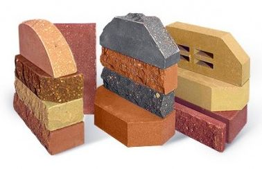
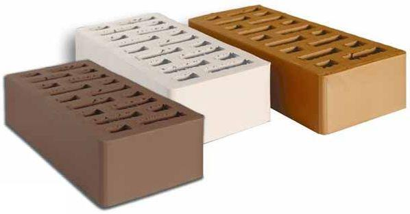
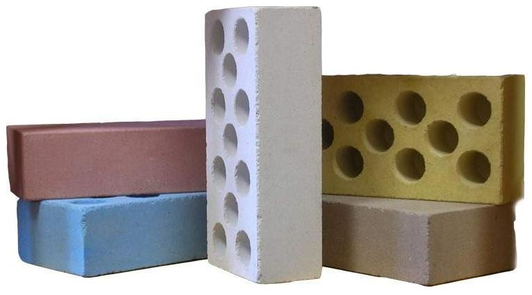
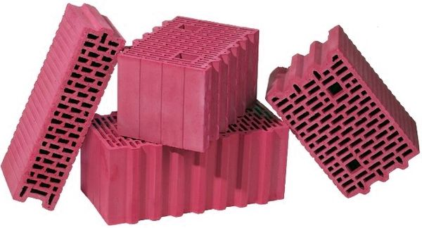
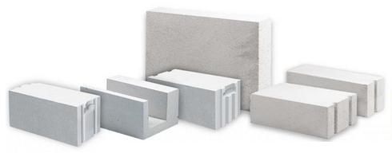

Строительство стен
Стены и перегородки – это, пожалуй, самые важные части здания. Будучи также наиболее заметными элементами конструкции любого сооружения, они не только формируют внешний вид, но и отвечают за его прочность и долговечность. Именно стены частного дома несут на себе на протяжении десятилетий всю нагрузку, не только собственного веса, но и веса перекрытий, кровли, коммуникаций, инженерного оборудования, а также дизайнерских и прочих компонентов сооружения. Они также выполняют и другие важные функции. Несмотря на отсутствие серьезной сейсмической опасности в большинстве регионов нашей страны, небольшие колебания все же случаются, как отголоски далеких сильных толчков. Исходя из этого, при возведении стен стоит продумывать и закладывать в них определенный запас прочности. строительство стенОт их конструкции, толщины и утепления будет зависеть – сохранение тепла зимой и прохлады летом, уровень звукоизоляции, срок службы здания, а также эстетичность его фасада. Поэтому к выбору материала для стен и технологии их строительства необходимо относится серьезно и ответственно. Фактически, стены и перегородки оказывают наибольшее влияние на комфорт проживания в загородном доме.
 Говоря о возведении вертикальных частей здания, нельзя предварительно не упомянуть об основании, на которое они опираются. Речь, конечно, идет о фундаменте, который должен быть достаточно прочным, чтобы выдержать вес будущего строения. Дома из разных материалов требуют наличия разных видов оснований. Например, если для легких каркасных или деревянных коттеджей подойдет простой столбчатый фундамент, то для тяжелых кирпичных или монолитных зданий потребуется ленточный фундамент, выдерживающий большие нагрузки. Что касается стоимости строительства стен, то она зависит от их сложности и выбранных материалов. При этом в разных случаях может отличаться стоимость монтажа стен даже из материалов одного вида. Так, цена кладки облицовочного кирпича превышает аналогичную цену для чернового примерно в два раза. Связано это с разными затратами труда и времени на соответствующие работы. Выбранный вид материалов для стен также оказывает существенное влияние на финансовые затраты на их возведение. Например, самой дорогой разновидностью кладки является весьма сложная и длительная – каменная. В свою очередь кладка стен из газобетона, отличающегося небольшим весом и простотой обработки, обойдется гораздо дешевле.
Говоря о возведении вертикальных частей здания, нельзя предварительно не упомянуть об основании, на которое они опираются. Речь, конечно, идет о фундаменте, который должен быть достаточно прочным, чтобы выдержать вес будущего строения. Дома из разных материалов требуют наличия разных видов оснований. Например, если для легких каркасных или деревянных коттеджей подойдет простой столбчатый фундамент, то для тяжелых кирпичных или монолитных зданий потребуется ленточный фундамент, выдерживающий большие нагрузки. Что касается стоимости строительства стен, то она зависит от их сложности и выбранных материалов. При этом в разных случаях может отличаться стоимость монтажа стен даже из материалов одного вида. Так, цена кладки облицовочного кирпича превышает аналогичную цену для чернового примерно в два раза. Связано это с разными затратами труда и времени на соответствующие работы. Выбранный вид материалов для стен также оказывает существенное влияние на финансовые затраты на их возведение. Например, самой дорогой разновидностью кладки является весьма сложная и длительная – каменная. В свою очередь кладка стен из газобетона, отличающегося небольшим весом и простотой обработки, обойдется гораздо дешевле.
Выбор материала для строительства стен частного дома
Стоимость возведения стен и перегородок составляет значительную часть от общих затрат на сооружение всего здания. Поэтому к вопросу подбора материала для них необходимо подходить очень ответственно. В этом процессе самыми важными являются следующие факторы:

Стоимость возведения стен и перегородок составляет значительную часть от общих затрат на сооружение всего здания. Поэтому к вопросу подбора материала для них необходимо подходить очень ответственно. В этом процессе самыми важными являются следующие факторы:
- Прочность – самый важный критерий, на который необходимо обращать внимание при строительстве стен. От него будет зависеть надежность конструкции и долговечность всего здания. Стены должны обладать достаточной прочностью, чтобы выдерживать предполагаемое количество этажей, вес перекрытий, а также конструкцию крыши;
- Стоимость – существует несколько вариантов снижения расходов на сооружение стен. При возведении дома для этих целей целесообразно использовать разные стройматериалы. Например, можно применять качественный и дорогой материал для несущих внешних стен, а для межкомнатных перегородок приобрести более дешевые аналогичные изделия. Также можно изначально спроектировать дом из облегченных стройматериалов, тогда сэкономить получиться не только на стенах, но и на более простом фундаменте;
- Затраты труда – их количество можно сократить, используя при строительстве крупные блоки вместе небольших, таких как кирпичи. В этом случае процесс возведения будет проходить не только легче, но и в 3-4 раза быстрее. Самыми же быстромонтируемыми являются каркасные панельные перегородки;
- Теплоизоляция – поможет постоянно экономить значительные средства на отоплении. Поэтому ее количество нужно тщательно рассчитывать, а также не жалеть средств на качественный утеплитель. Его укладки можно избежать только в одном случае, если заранее выбрать материал для стен с хорошими теплоизолирующими характеристиками и сделать их достаточно толстыми;
- Отделка – еще один фактор, за счет которого можно уменьшить цену работ по кладке стен. Материалы с гладкими поверхностями и небольшими швами максимально упрощают проведение таких работ и затраты на них. Важной является и эстетичность фасадных поверхностей – то, какими они должны быть, должен заранее решить для себя каждый владелец будущего дома.
Помочь в выборе оптимального материала для строительства стен и перегородок может информация о самых популярных их разновидностях, применяемых в этой области. Виды кладки стен представлены далее.
Кирпич
Традиционные кирпичные дома можно смело назвать самыми распространенными из частных строений в нашей стране. Материал, из которого они возведены, известен каждому и является одним из самых древних изобретений человечества. Доказав свою прочность за века использования, он отлично выдерживает холод и зной, дожди, град, сильные ветры и другие неблагоприятные атмосферные воздействия. Благодаря этому, дом из кирпича может простоять сто и более лет. Эстетичный внешний вид качественного материала такого типа также сохранится очень долго. Поскольку технология кладки кирпичных стен за многие годы была доведена почти до совершенства, найти хорошего специалиста для выполнения этих работ тоже несложно. Другие плюсы, а также минусы этого материала выглядят так:

- Преимущества кирпича – универсальность, долговечность, негорючесть, эстетичный вид облицовочных марок, устойчивость к образованию грибка и плесени, хорошие тепло- и звукоизоляционные качества;
- Недостатки кирпича – значительный вес, необходимость наличия прочного фундамента, дороговизна и сложность монтажа.
Существует два основных вида данных изделий, в зависимости от компонентов, входящих в их состав:

- Керамический кирпич – производится из экологически чистой глины, которая подвергается обжигу. Он отличается высокой прочностью, водонепроницаемостью и морозоустойчивостью. Кирпичи из керамики бывают полнотелыми (до 13% пустот) и пустотелыми (до 49% пустот), с круглыми, квадратными и овальными отверстиями, расположенными в горизонтальной и вертикальной плоскостях. Чем больше будет таких отверстий для воздуха – тем лучше теплоизоляционные качества материала;
- Силикатный кирпич – производится из смеси извести, песка и небольшого количества различных добавок. Этот тип строительного материала также бывает цельным или с внутренними полостями. При этом обе разновидности силикатного кирпича одинаково прочны. Несмотря на то, что классическим цветом таких изделий является белый, сейчас в продажи можно найти силикатные кирпичи разных цветов, позволяющие воплощать различные дизайнерские замыслы.
Керамблок
Керамоблоки относятся к современным строительным материалам, пользующимся большой популярностью в западных странах. Такому положению вещей способствуют – дешевизна и высокая скорость возведения зданий из этого материала, а также его натуральное происхождение. Данные изделия, состоящие из смеси обожженной глины и опилок, по форме напоминают кирпичи с порами, только более крупных размеров, и с рифлеными боковыми поверхностями. Стыкуются они при помощи соединения паз-гребень. Высокая прочность керамоблоков позволяет строитель из них многоэтажные дома, которые простоят не менее 150 лет. Что касается достоинств и недостатков этого материала, то они выглядят так:

- Преимущества керамоблоков – небольшой вес, высокая прочность, отличные показатели огне- и морозоустойчивости, хорошие звуко- и теплоизоляционные характеристики, быстрота и простота возведения домов, экономичное использование скрепляющего раствора (его не надо применять в вертикальных швах), большой срок службы зданий, пористая структура, позволяющая стенам дышать (так в помещениях регулируется влажность и формируется комфортный микроклимат);
- Недостатки керамоблоков – существенная хрупкость (требующая аккуратной транспортировки и хранения), высокая стоимость (данный материал относится к элитным), возможные сложности в поиске профессиональных укладчиков (из-за относительно недавнего появления таких изделий на отечественном рынке).
Кладка стен из керамоблоков имеет свои особенности, обусловленные характеристиками этих изделий, о которых необходимо упомянуть подробнее. Будущим владельцам загородных домов, которые собираются возводить их этих материалов, нужно знать, что их размеры могут быть разными. Поэтому количество блоков необходимо грамотно рассчитать, после подбора их конкретного типа. Строя здание из керамоблоков крупных размеров, можно сэкономить время возведения и расходы раствора, не используемого для скрепления вертикальных швов. Для кладки несущих стен, зачастую, используются изделия длиной от 30 см. Если же толщина стены будет равна 38 см и более, то ее не нужно дополнительно утеплять. Этому будет способствовать небольшая теплопроводность данного материала – от 0,14 до 0,29 Вт/м²·°C. Керамический блок способен выдержать без повреждений до 50 циклов замораживания-размораживания, что соответствует маркировке F50 для кирпича. Крупные изделия этого вида длиной 38, 44 и 50 см имеют марку М100. В свою очередь, для тонких и надежных стен подойдет марка М150.
Газобетон
Газобетонные блоки – это строительные материалы из ячеистого бетона, отличительной чертой которых являются сферические, замкнутые и не сообщающиеся поры от 1 до 3 мм в диаметре, равномерно распределенные по всему объему изделий. Главным преимуществом данных блоков являются отличные теплоизоляционные качества, превышающие аналогичные свойства кирпича в 3 раза. Их обеспечивает наличие воздуха в структуре материала. Кладка стен из газобетона, уложенного в один слой толщиной всего в 30-40 см, имеет такие же характеристики, как и кладка многослойных стен из керамоблоков или кирпича. Его воздушные поры препятствуют значительным колебаниям влажности и температуры, способствуя поддержке оптимального микроклимата в помещениях. Кроме того, данный материал имеет очень большой срок эксплуатации, позволяющий ему не терять своих полезных свойств со временем.

Впрочем, ценность этого материала заключается не только в большом количестве его достоинств, которые полностью будут перечислены далее. Важно и то, что стены из газобетона достаточно легко и быстро монтируются, поэтому затраты на этот процесс снижаются. Благодаря крупным размерам, клея или специального раствора для скрепления таких блоков понадобится меньше, чем в случае с кирпичом. При этом если кладка стен выполняется на клей, то швы получаются крайне тонкими, что способствует еще лучшей теплоизоляции здания. Применять данные изделия можно на разных этапах строительства. Газобетонные блоки имеют небольшой вес, поэтому их легко и дешево транспортировать и переносить, а разрезать их можно при помощи обычной ножовки. Их ровные поверхности также позволяют уменьшить затраты на внутреннюю отделку помещений. Полные списки плюсов и минусов газобетона представлены далее:
- Преимущества газобетона – высокая скорость укладки, минимальная теплопроводность, хорошая прочность на сжатие и морозоустойчивость, отличные показатели пропускания пара, гладкость поверхностей, высокая огнеупорность (материал не выделяет токсинов при горении, благодаря натуральным составляющим);
- Недостатки газобетона – необходимость наличия прочного фундамента, небольшая прочность при сгибании, возможность появления трещин со временем, особые требования к хранению на улице (блоки необходимо тщательно изолировать от неблагоприятного атмосферного воздействия).
Самой важной характеристикой для газобетона является плотность. В маркировке она обозначается буквой D с цифрами от 350 до 1200 кг/м3. Для строительства частного дома наиболее подходят марки газобетона D500 - D900. Что касается веса этих изделий, то стандартный блок весит около 20 кг. При возведении здания он способен заменить порядка 20 кирпичей, общим весом почти 80 кг. Интересно, что паропроницаемость дома из газобетона может сравниться только с паропроницаемостью деревянного коттеджа. Данный строительный материал очень экологичен, благодаря тому, что производится из натуральных компонентов. Все эти качества определенно делают его достойным вариантом для кладки стен.